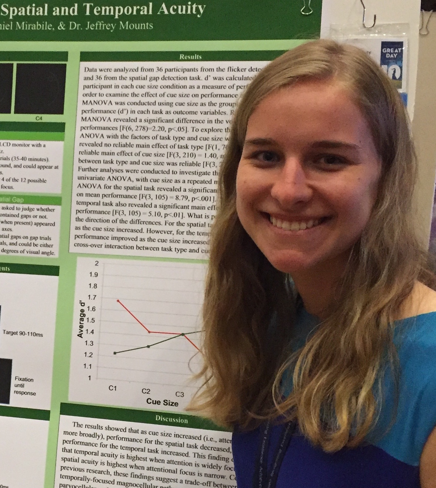
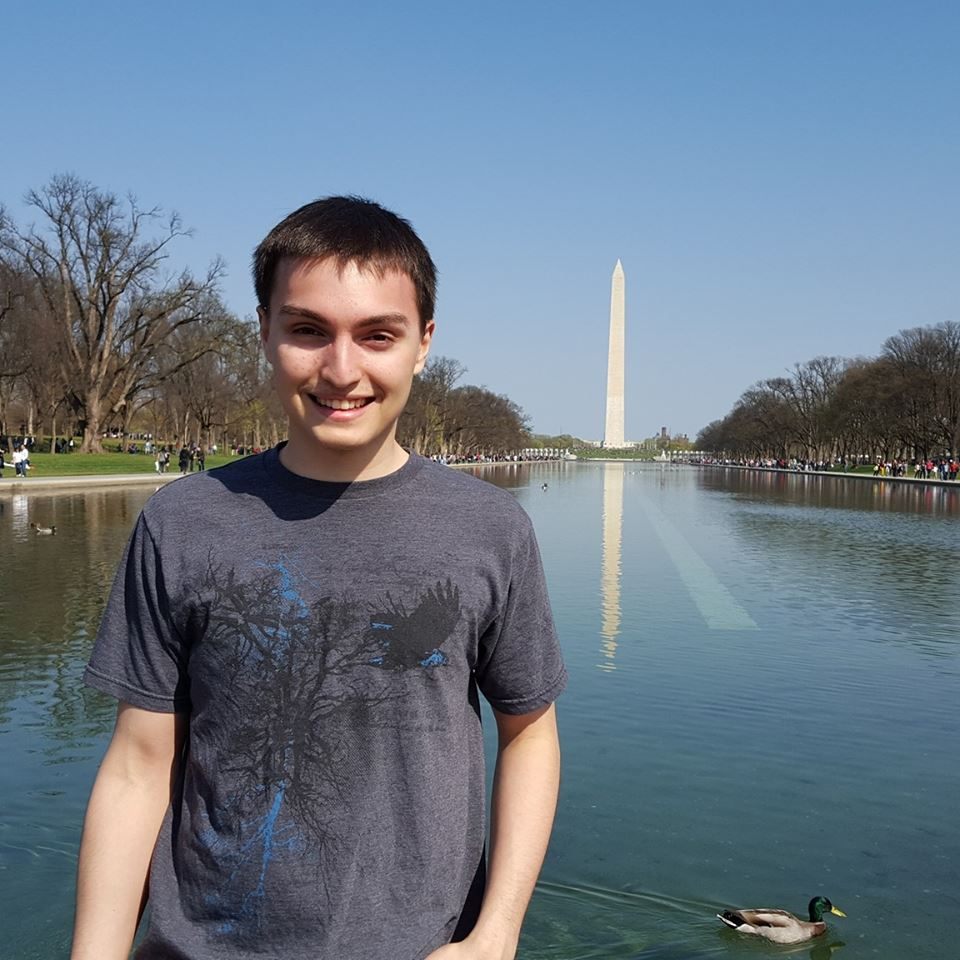
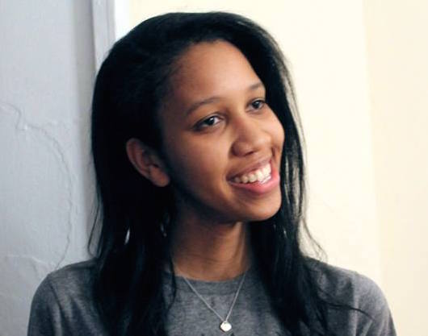
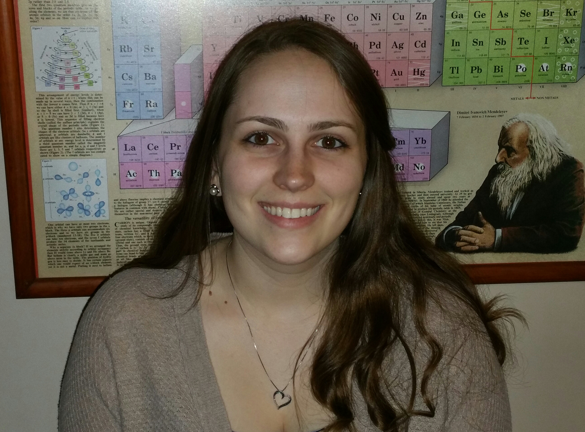
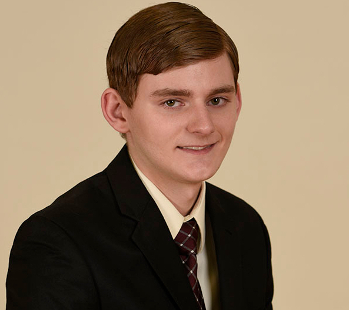

The National Science Foundation
Rochester Institute of Technology
The National Science Foundation
Rochester Institute of Technology
Alexander CalderwoodMontana State University |
|
|  |
Ashley EdwardsSUNY Geneseo |
Aliya GangjiMuhlenberg College |
|
|  |
Ryan HigginsSwarthmore College |
|  |
Olivia IrbySkidmore College |
Anthony MassicciOnandaga Community College |
|
|  |
Rebecca PlourdeRhode Island College |
|  |
Trevor WaldenRochester Institute of Technology |